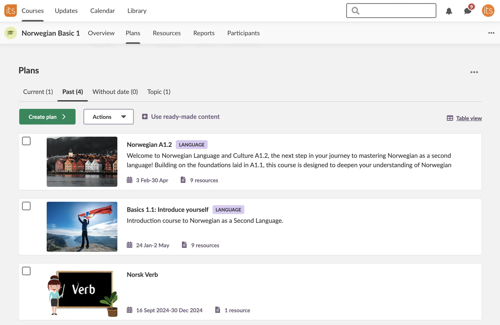

itslearning LMS
itslearning is a leading European cloud-based Learning Management Platform that supports millions of teachers and students across K-12, higher and vocational education. As a UX Team Lead, I manage a team of five UX designers and a UX writer. My focus has been on building a shared vision for the interface, improving collaboration, and making the user experience more cohesive and accessible.
Role
Lead UX/UI designer
Design team
2 junior designers
Timeframe
2020–2022
itslearning
Over the past years, I’ve reorganised how our UX team works — from daily collaboration to design delivery. We moved from Sketch to Figma, introduced shared templates and a unified visual system, and aligned our workflows with Frontend and Accessibility teams.
These changes made it possible to deliver larger structural updates to the LMS interface: a refreshed color palette and typography, consistent sizing, navigation that works seamlessly across devices, and reusable page and form templates. Together, these updates reduced inconsistencies, improved accessibility, and accelerated development.
Improving Accessibility and Design: New Icons in itslearningOn the language side, I organized monthly native speaker reviews for Polish, Ukrainian, and Russian languages inside the UX team to ensure better localization quality. The process is managed by the UX writer.
Improving education with AI
In my role, I have been exploring how AI can enhance the learning experience for students and educators. This includes researching AI-driven tools that can provide personalized learning paths, automate administrative tasks, and offer real-time feedback to learners.
Leading a team
I believe that designers do their best work when they have freedom to take initiative. However, in a large product, this freedom must be balanced with alignment and consistency. My role as a team lead is to keep this balance. Through regular 1:1s, I learn what motivates each designer and adapt their tasks so they stay both meaningful and challenging.
You are one of the best design leaders I ever worked with. And some of them had two or three times more years of experience than you have now. You are so talented, both in design and in leadership— Matylda Rohleder, UX designer
There is our design system, Prometheus, that helps us maintain consistency, and every UX designer contributes to its evolution.
The UX team meets weekly for syncs and design feedback sessions where designers present their current work, exchange feedback, and make decisions together. This rhythm helps us move fast, stay consistent, and maintain a strong sense of shared ownership.
Accessibility
Back in 2022, itslearning was looking for a UX design lead with practical experience in accessibility. By then, itslearning has already been audited multiple times and met legal consequences of non-compliance with state accessibility requirements.
Accessibility is a key focus area for itslearning. I led the effort to audit and improve the LMS interface to meet WCAG 2.1 AA standards. This involved collaborating closely with developers, product owners, and QA teams to identify and address accessibility issues.
The biggest challenge is interpretation of accessibility guidelines and best practices by external accessibility auditors, as well as internal specialists.
As a result, we significantly enhanced the usability of the platform for users with disabilities, ensuring that itslearning is an inclusive learning environment for all students and educators.
itslearning accessibility statementSanoma Learning
I also led broader UX initiatives such as the creation of an accessibility annotation kit for all designers in the company, and the Accessibility Champions group.